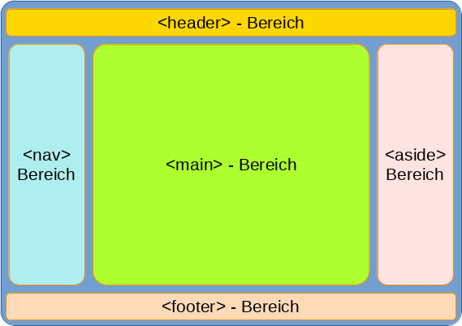

Grundlagen zu CSS
Aufgabe 2: (Zeitaufwand: 45 Minuten)
-
Entwerfen Sie eine HTML-Datei mit den abgebildeten Semantik-Elementen und eine CSS-Datei mit einem Grid-Layout (siehe Abbildung unten).
-
Ändern Sie verschiedene Attribute (auch das Grid) in ihrer CSS-Datei und beobachten Sie die Auswirkungen auf das HTML-Dokument.
